Um castelo francês transformado em área de mineração de sal de radianita. Atravesse ruas medievais enquanto explora equipamento industrial reutilizável para enfrentar as defensas em camadas desse mapa tradicional de três rotas.
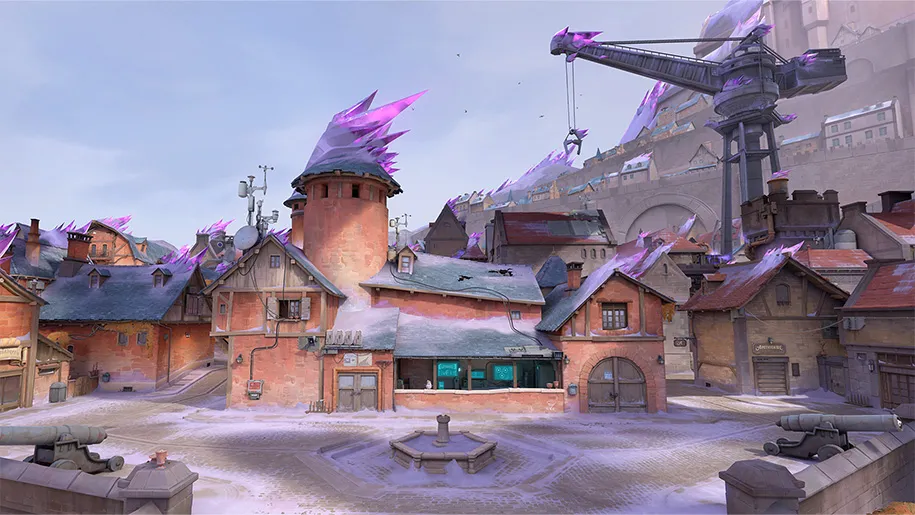
Conheça Summit: lar do mais avançado centro de treinamento de Radiantes em toda a China. Explore seu potencial estratégico em um mapa com imensas paredes reposicionáveis que mudam a cara da batalha por toda a rodada.
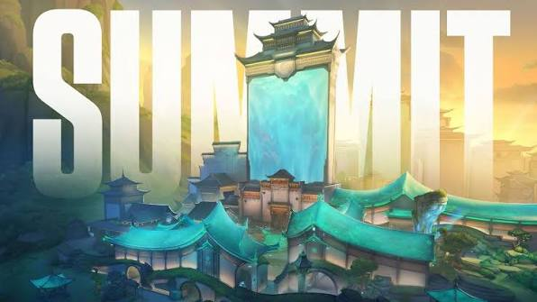
Um castelo francês transformado em área de mineração de sal de radianita. Atravesse ruas medievais enquanto explora equipamento industrial reutilizável para enfrentar as defensas em camadas desse mapa tradicional de três rotas.

Encare o abismo: Abyss é uma base clandestina enterrada em um abismo impenetrável e interminável. Utilize quedas letais para fazer novas jogadas com utilitários ou convidar seus inimigos para mergulhar de cabeça. Altos riscos podem trazer altas recompensas, mas é necessária uma execução perfeita.
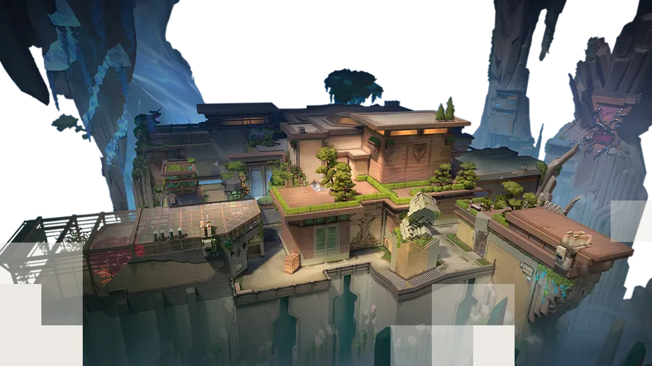
Um desastre em uma instalação da Kingdom ameaça engolir toda a vizinhança. Dê um pulo no seu food truck favorito e depois lute por toda a cidade neste mapa três rotas.
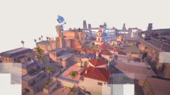
Uma estrutura misteriosa com um conduíte astral irradia poder ancestral. Grandes portas de pedra oferecem várias oportunidades de movimentação e revelam caminhos para três locais enigmáticos.
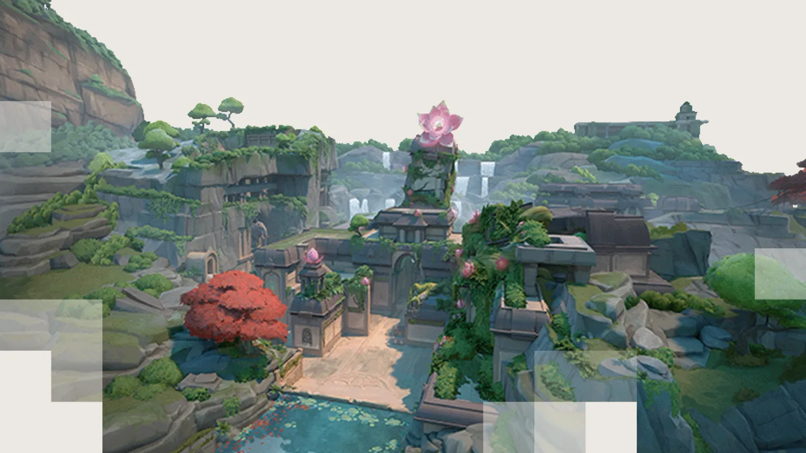
Atacantes avançam em direção aos Defensores neste vibrante mapa subaquático com dois pontos principais. Pearl é um mapa sem mecânicas focado no ambiente. Encare a batalha em um Meio compacto ou em áreas mais alongadas no nosso primeiro mapa situado na Terra Ômega.
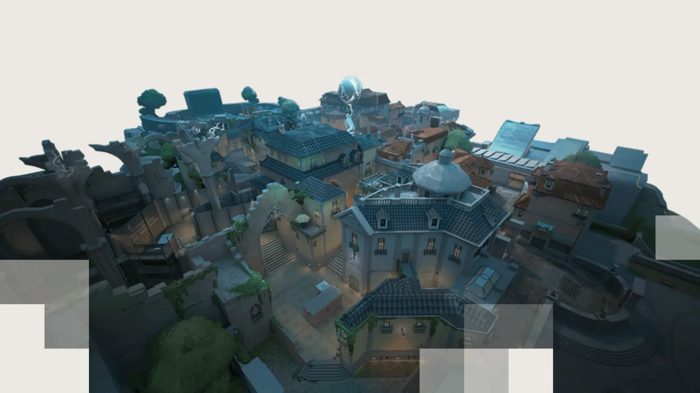
Um local de pesquisas altamente confidencial partido ao meio por um experimento com Radianita malsucedido. Com opções tão divididas quanto o próprio mapa para os defensores, a escolha é sua: encare os atacantes na própria base deles ou prepare o terreno para um ataque iminente.
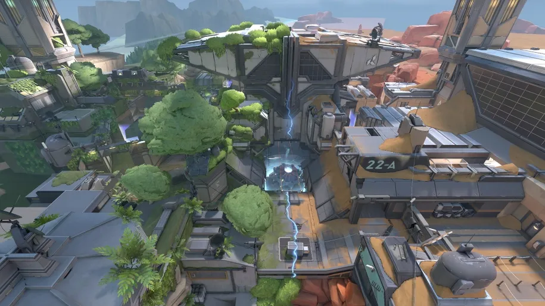
Conheça as ruínas históricas ou visite as grutas deste paraíso tropical. Mas é bom se cobrir, pois temos espaços muito abertos e embates de longa distância. Cuide dos seus flancos e você poderá curtir a brisa do Breeze.
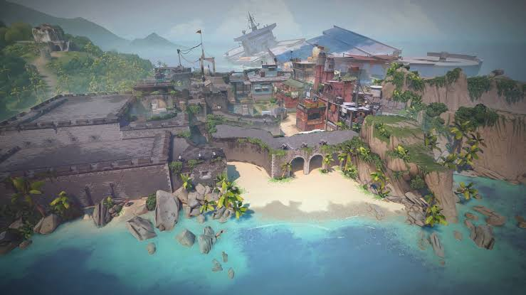
Seu próximo campo de batalha será uma área de escavação secreta da Kingdom retomada pela força do Ártico. Você precisará ter cuidado com os terrenos horizontais dos dois pontos principais, que são protegidos por neve e metal. Aproveite para usar as tirolesas, e seus inimigos nunca verão seu ataque iminente.
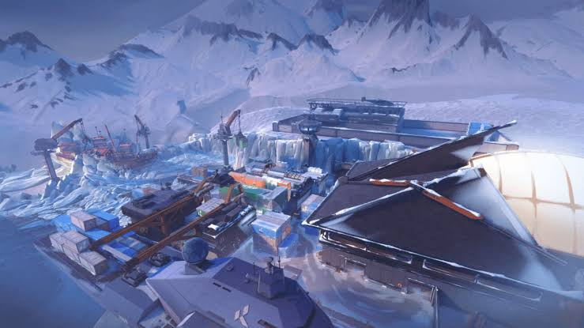
Com várias opções de posicionamento e conflito, um território aberto divide duas áreas em Ascent. Cada uma pode ser fortificada por portas explosivas irreversíveis que, quando derrubadas, forçam as equipes a destruí-las ou a acharem outra maneira de prosseguir. Não deixe que o inimigo tome o seu território.
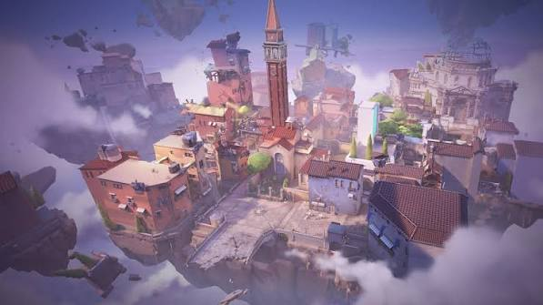
Se quiser avançar, é preciso subir. Separados por uma área central elevada, dois pontos fornecem movimentação rápida com duas cordas ascendentes. Cada ponto tem uma torre imponente que é vital para o controle da área. E não se esqueça: mantenha os olhos abertos e focados nas áreas elevadas antes que tudo vá pelos ares.
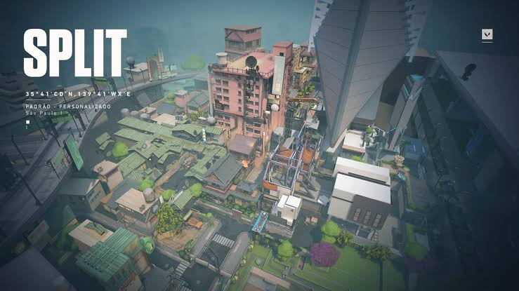
Sob um mosteiro esquecido, surge um clamor de agentes rivais que entram em confronto para controlar três locais. Há mais território para controlar, mas os defensores podem usar o espaço extra para investidas agressivas.
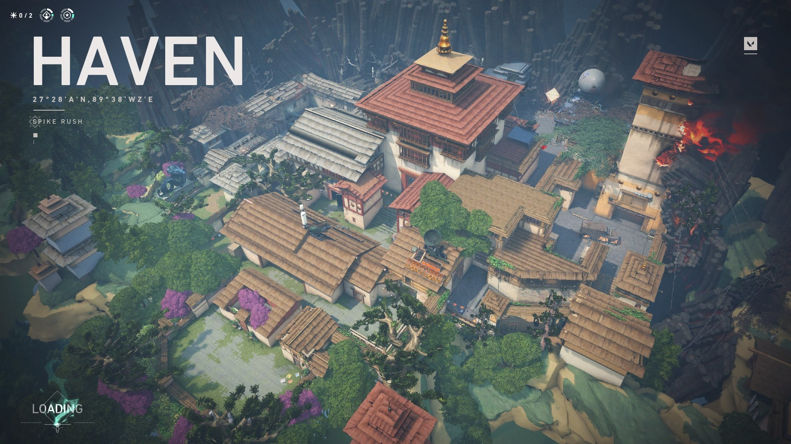
Dois sites. Sem meio. É preciso escolher entre esquerda ou direita. E depois, o que vai ser? Ambos oferecem caminhos diretos para os atacantes e um par de teletransportadores unidirecionais facilita o flanqueamento.
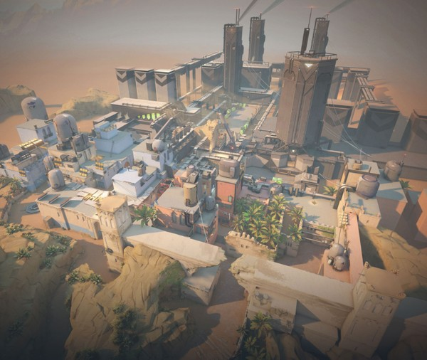